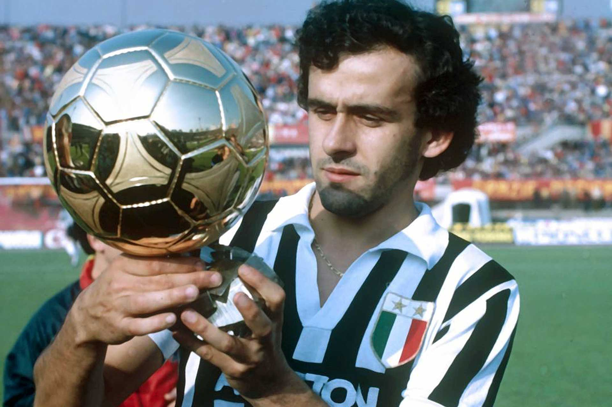

FOOTBALL INPO
10 PEMAIN SEPAK BOLA TERBAIK DI DUNIA
Pemain sepak bola terbaik sepanjang masa adalah sosok pesepak bola yang memiliki kemampuan luar biasa, prestasi gemilang, dan pengaruh besar dalam perkembangan dunia sepak bola. Mereka bukan hanya unggul dalam hal teknik, kecepatan, dan strategi bermain, tetapi juga mampu menginspirasi banyak orang melalui dedikasi, kerja keras, serta pencapaian yang diraih selama kariernya. Pemain terbaik sepanjang masa biasanya dikenal karena mampu mempertahankan performa tinggi dalam waktu lama dan memberikan dampak besar bagi klub maupun negaranya.Beberapa nama yang sering disebut sebagai pemain terbaik sepanjang masa antara lain Pelé, Diego Maradona, Lionel Messi, dan Cristiano Ronaldo. Pelé dikenal sebagai ikon sepak bola dunia dengan tiga gelar Piala Dunia bersama Brasil. Maradona diingat karena kemampuan individunya yang magis dan momen “Hand of God” di Piala Dunia 1986. Messi dikenal karena keajaiban dribelnya, visi permainan luar biasa, dan rekor gol yang fantastis, sedangkan Ronaldo dikenal karena ketajaman, kecepatan, dan dedikasi fisiknya yang luar biasa. Mereka semua memiliki gaya unik, tetapi sama-sama meninggalkan warisan besar dalam sejarah sepak bola dunia.
1. Cristiano Ronaldo (Portugal)
Cristiano Ronaldo dos Santos Aveiro adalah lambang kerja keras, kedisiplinan, dan ambisi tanpa batas. Berbeda dari Messi yang mengandalkan bakat alami, Ronaldo menempa dirinya menjadi atlet luar biasa melalui dedikasi dan latihan intens. Ia sukses besar bersama tiga klub besar: Manchester United, Real Madrid, dan Juventus, serta kini menjadi ikon bagi Portugal. Ronaldo telah memenangkan 5 trofi Liga Champions, Euro 2016, dan Nations League 2019, serta meraih 5 Ballon d’Or. Dengan lebih dari 950 gol resmi, ia menjadi pencetak gol terbanyak sepanjang sejarah sepak bola profesional. Ronaldo dikenal karena kecepatan, kekuatan, kemampuan udara, serta mental juaranya yang luar biasa, menjadikannya simbol determinasi dan profesionalisme sejati.
2. Lionel Messi (Argentina)
Lionel Andrés Messi adalah representasi dari kesempurnaan teknis dan konsistensi tertinggi dalam sejarah sepak bola modern. Ia mengawali karier di Barcelona, di mana ia berkembang menjadi pemain paling berpengaruh dalam sejarah klub tersebut. Dengan dribel ajaib, akurasi umpan, penyelesaian klinis, dan kemampuan menciptakan momen brilian di setiap pertandingan, Messi membawa Barcelona meraih 4 Liga Champions, 10 La Liga, serta banyak trofi lainnya. Di level tim nasional, ia akhirnya menghapus label “belum juara dunia” dengan membawa Argentina menjuarai Copa América 2021 dan Piala Dunia 2022. Messi juga memenangkan 8 Ballon d’Or, rekor terbanyak dalam sejarah. Ia dikenal bukan hanya karena bakatnya, tetapi juga karena kerendahan hati dan dedikasinya pada permainan yang ia cintai.
3. Pelé (Brasil)
Pelé, yang bernama asli Edson Arantes do Nascimento, dianggap sebagai simbol kejayaan sepak bola dunia dan dikenal sebagai “The King of Football”. Ia bukan hanya seorang pencetak gol luar biasa, tetapi juga pemain yang memiliki visi, teknik, dan kemampuan membaca permainan yang luar biasa. Pelé memulai karier profesionalnya di usia 15 tahun bersama Santos FC dan langsung mencuri perhatian dunia dengan penampilannya di Piala Dunia 1958 saat masih berusia 17 tahun. Ia kemudian memenangkan tiga gelar Piala Dunia (1958, 1962, 1970) — rekor yang belum pernah disamai. Selama kariernya, Pelé mencetak lebih dari 1.000 gol dan membawa Santos menjuarai berbagai kompetisi, termasuk Copa Libertadores dan Intercontinental Cup. Di luar lapangan, Pelé menjadi duta besar sepak bola dunia dan simbol sportivitas sejati yang dikenang lintas generasi.
4. Diego Maradona (Argentina)

Diego Armando Maradona dikenal sebagai pemain yang mampu mengubah arah pertandingan seorang diri. Dengan kemampuan dribel yang luar biasa, visi tajam, dan kaki kiri yang ajaib, ia sering disebut sebagai pesepak bola paling berbakat secara alami dalam sejarah. Maradona mencapai puncak kejayaannya di Piala Dunia 1986, ketika ia membawa Argentina menjuarai turnamen tersebut dengan mencetak dua gol paling terkenal di dunia: “Hand of God” dan “Goal of the Century” melawan Inggris. Di level klub, ia menjadi legenda Napoli, klub kecil Italia yang ia bawa menjuarai dua Serie A, Coppa Italia, dan UEFA Cup — sesuatu yang belum pernah dicapai sebelumnya. Di luar prestasi, Maradona dikenal sebagai sosok penuh emosi dan karisma yang menjadikan sepak bola lebih dari sekadar olahraga, melainkan seni dan perjuangan hidup.
5. Johan Cruyff (Belanda)
Johan Cruyff adalah otak di balik revolusi sepak bola modern melalui filosofi “Total Football”. Ia bukan hanya pemain jenius, tapi juga pemikir sepak bola yang mengubah cara dunia memahami permainan. Bersama Ajax Amsterdam, Cruyff memenangkan 3 Piala Eropa (1971, 1972, 1973) dan meraih 3 Ballon d’Or. Ia juga membawa Barcelona meraih gelar La Liga dan menjadi sosok penting dalam membangun identitas klub itu, yang kemudian dikenal dengan filosofi “tiki-taka”. Sebagai pelatih, Cruyff menciptakan fondasi yang melahirkan generasi emas Barcelona seperti Guardiola, Xavi, dan Iniesta. Ia dikenang bukan hanya karena keindahan permainannya, tetapi juga karena pemikirannya yang mengubah wajah sepak bola dunia.
Artikel Lainnya:8 winger_Kanan_Terbaik2025
6. Franz Beckenbauer (Jerman Barat)
Franz Beckenbauer, atau “Der Kaiser”, dikenal sebagai pemain yang elegan, berwibawa, dan cerdas dalam membaca permainan. Ia adalah pemain yang merevolusi posisi libero (sweeper) dengan gaya bermain yang menyerang dan elegan. Bersama Bayern Munich, Beckenbauer memenangkan 3 Piala Eropa berturut-turut (1974–1976) dan membawa Jerman Barat meraih Euro 1972 serta Piala Dunia 1974. Lebih luar biasa lagi, ia juga berhasil membawa Jerman menjadi juara Piala Dunia 1990 sebagai pelatih, menjadikannya salah satu dari sedikit orang yang sukses di dua peran tersebut. Ia dikenang sebagai sosok pemimpin sejati dan simbol kesuksesan sepak bola Jerman.
7. Ronaldo Nazário (Brasil)
Ronaldo Luís Nazário de Lima, dijuluki “El Fenómeno”, adalah striker dengan kombinasi kekuatan, kecepatan, dan teknik luar biasa yang sulit ditandingi. Ia memenangkan Piala Dunia 1994 dan 2002, menjadi top skor Piala Dunia 2002, dan dua kali meraih Ballon d’Or (1997, 2002). Di usia muda, ia menjadi pemain termuda yang pernah memenangkan penghargaan tersebut. Meskipun kariernya sempat terganggu cedera parah, Ronaldo selalu mampu bangkit dan menunjukkan kelasnya bersama klub-klub besar seperti Barcelona, Inter Milan, dan Real Madrid. Ia dikenang sebagai striker paling menakutkan di eranya dan inspirasi bagi generasi penyerang setelahnya.
8. Zinedine Zidane (Prancis)
Zinedine Zidane dikenal sebagai pemain dengan elegansi dan ketenangan luar biasa di lapangan. Ia memiliki teknik kontrol bola yang lembut, kemampuan membaca permainan tinggi, dan sering muncul di momen krusial. Zidane membawa Prancis menjuarai Piala Dunia 1998 dan Euro 2000, serta meraih Ballon d’Or 1998. Di level klub, ia menjuarai Liga Champions 2002 bersama Real Madrid dan mencetak salah satu gol voli paling indah sepanjang masa di final melawan Bayer Leverkusen. Setelah pensiun, Zidane juga sukses sebagai pelatih dengan membawa Real Madrid menjuarai tiga Liga Champions berturut-turut (2016–2018). Kehebatannya sebagai pemain dan pelatih menjadikannya sosok sempurna dalam sejarah sepak bola Prancis dan dunia.
9. Ronaldinho (Brasil)
Ronaldinho Gaúcho adalah simbol dari keindahan dan kebebasan dalam sepak bola. Ia dikenal karena trik, flair, dan kreativitas tanpa batas yang membuat jutaan orang jatuh cinta pada permainan ini. Ronaldinho memenangkan Piala Dunia 2002, Liga Champions 2006, dan Ballon d’Or 2005. Bersama Barcelona, ia menjadi pemain yang mengembalikan kejayaan klub tersebut di era sebelum Messi. Ronaldinho juga dikenal karena sifatnya yang ceria, selalu bermain dengan senyum, dan membuat sepak bola tampak seperti hiburan sejati. Ia menunjukkan bahwa sepak bola bisa menjadi seni, bukan sekadar kompetisi.
10. Michel Platini (Prancis)
Michel Platini dikenal sebagai gelandang kreatif dengan visi luar biasa dan kemampuan mencetak gol yang menakjubkan. Pada era 1980-an, ia menjadi pemain paling dominan di Eropa dengan meraih 3 Ballon d’Or berturut-turut (1983–1985). Platini membawa Prancis juara Euro 1984, di mana ia menjadi top skor turnamen. Di level klub, ia meraih Piala Champions 1985 bersama Juventus serta gelar Serie A. Platini dikenal karena ketenangan, teknik tinggi, dan kemampuan eksekusi bola mati yang luar biasa. Ia bukan hanya pemimpin di lapangan, tetapi juga salah satu pemain yang membawa sepak bola Prancis ke level dunia.
— Kesepuluh pemain di atas bukan sekadar legenda yang menorehkan prestasi di atas lapangan, tetapi juga simbol dari perjalanan panjang dan indahnya sejarah sepak bola dunia. Mereka menunjukkan bahwa menjadi pemain terbaik bukan hanya tentang mencetak gol atau mengangkat trofi, melainkan juga tentang dedikasi, cinta terhadap permainan, dan pengaruh yang abadi bagi jutaan orang di seluruh dunia. Dari keanggunan Pelé dan Maradona yang memukau, hingga dominasi Messi dan Ronaldo di era modern, semuanya membuktikan bahwa sepak bola adalah bahasa universal yang menyatukan generasi. Setiap nama membawa kisah, perjuangan, dan gaya bermain unik yang membentuk identitas permainan ini. Warisan mereka akan terus hidup menginspirasi pemain, pelatih, dan para pecinta sepak bola di masa kini dan masa depan.